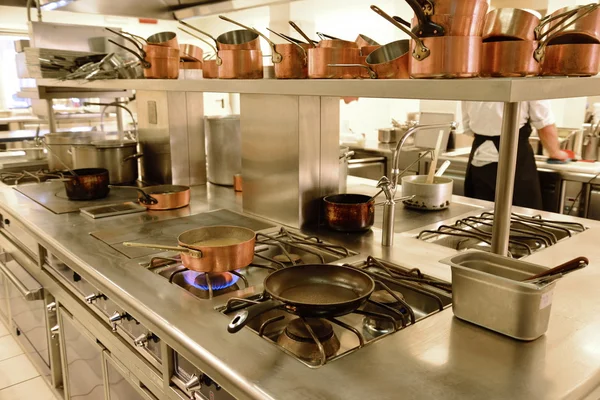

Ubicada en el corazón de la ciudad de San Fernando, La Cocina de Juan es una empresa de Calidad Certificada. Con más de 20 años de experiencia en el mercado, trae lo mejor de materias primas para preparar sus recetas y así proporcionar "La más Alta Calidad, al más Bajo Precio". Ya es destaque en la ciudad y conquista nuevos clientes diariamente.
Fue fundada por nuestro Licenciado en Nutricion Dr.: Gomez Raúl, que actualmente lidera el equipo de profesionales Chefs para brindar un excelente servicio a nuestros Clientes, quienes están comprometidos en llevar los sabores tradicionales a sus hogares.